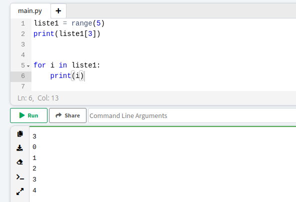

Was sind Listen in Python?
Wir haben bereits Variablen kennengelernt. Wenn wir aber nicht nut eine Zahl abspeichern wollen, sondern mehrer, weil diese Zusammengehören, dann nutzen wir Listen.
Listen gelten in Python als eigener Datentyp (also eine neue Art Zettel) und werden mit eckigen Klammern geschrieben:
- liste1 = [1, 2, 3, 4, 5, 6, 7, 8, 9, 10] ist eine Liste mit den Zahlen von 1 bis 10
- liste2 = [“Brot”, “Käse”, “Salat”, “Tomate”, “Ketchup”] ist eine Liste mit Strings für Sandwich
Zutaten
Eine Liste kann mehrere Zahlen, verschiedene Wörter oder auch eine Mischung von beidem speichern.
In einer Liste kann man einzelne Elemente “ansprechen”, indem man sie mit ihrer Position in der Liste in eckigen Klammern aufruft. Im folgenden Beispiel wird in Zeile 5 das vierte Element der Liste angesprochen durch den Index 3.
WICHTIG: Informatiker fangen immer bei 0 an zu zählen, das erste Element hat also die Position 0!
In dem Beispiel oben ist wird in der Zeile 3 die Länge, also Anzahl der Elemente der Liste mit dem Befehl len(liste2) abgefragt.
Der Befehl range gibt euch die Möglichkeit schnell und einfach Zahlen-Listen zu erstellen, anstatt die Zahlen von 0 bis 100 hier aus zu schreiben, reicht dieser Befehl und man kann danach einzelne Zahlen mit der Eckigen-Klammer-Schreibweise ansprechen.
Jetzt, wo du Listen kennst, lerne als nächstes, wie du diese in For-Schleifen einsetzten kannst.
Weiter zu For-Schleifen